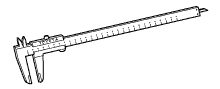
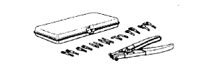
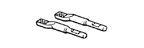

FRONT DRIVE SHAFT ASSEMBLY > INSPECTION > Preparation

| Dial Indicator with magnetic base | - |
| Micrometer | - |
| Press | - |
| Torque wrench | - |
| Vernier calipers | - |
| V-block | - |
| Vise | - |
| Vinyl tape | - |
| Item | Capacity |
| Outboard joint grease | 310 to 320 g (11.0 to 11.2 oz.) |
| Inboard joint grease | 314 to 324 g (11.1 to 11.4 oz.) |
 | 09010-3C100 | Set, Hexagon Wrench | - |
 | (09013-6C100) | Socket Hexagon 5mm | - |
 | 09072-1C210 | Vernier Calipers 300mm | - |
 | 09904-00010 | Expander Set | - |
 | (09904-00020) | No. 1 Claw | - |